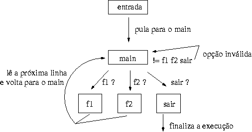

(see source)
(see source)
s///) foi executada com sucesso.
Já sabemos fazer os desvios, mas como determinar para qual ponto do script devemos pular ?
Simples, o sed nos possibilita a utilização de "label". Um "label" começa com o sinal de dois-pontos (:) e marca uma posição no script. Vamos praticar para clariar as idéias =8)
prompt> echo 121,123 | sed 's/1/0/' 021,123 prompt> echo 121,123 | sed 's/1/0/g' 020,023 prompt> echo 121,123 | sed 's/^\([^,]*\)1/\10/' 120,123 prompt> echo 121,123 | sed 's/^\([^,]*\)1/\10/g' 120,123
Todas falhariam. Na primeira tentativa, trocamos
somente a primeira ocorrência de 1 por 0. Na segunda, utilizando a
opção g da substituição, trocamos todos os 1s por 0s sem respeitar
se eles estão antes ou depois da nossa tag (a vírgula). Na terceira
tentativa, nós especificamos que queremos o caractere 1 antes de uma
vírgula, mas neste caso, ele trocaria somente uma
ocorrência que satisfaça o que especificamos, ou seja, um caractere 1
antes de uma vírgula. Na última opção, adicionamos o g, para trocarmos
todos os 1 por 0. Mas também falhou, pois como o sed lê a linha e
executa o comando uma única vez, ele irá procurar satisfazer o que
especificamos, ou seja, um caractere 1 antes de uma vírgula.
Para resolver este problema, precisamos usar o desvio. Relembrando, queremos trocar todas as ocorrências do caractere 1 antes de uma vírgula por 0. O comando para solucionar o problema é:
prompt> echo 121,123 | sed ':a;s/^\([^,]*\)1/\10/;ta' 020,123
No início marcamos um label (:a), após realizamos a substituição
do caractere 1 antes de uma vírgula (s/^\([^,]*\)1/\10/).
Caso ocorra sucesso na substituição, pulamos para o label a (ta).
Note que quando realizamos o desvio, o sed não irá ler a próxima linha,
e sim executar o mesmo comando sobre a linha, mas a linha modificada pela
substituição anterior. Assim, executamos a substituição enquanto
encontramos algum caractere 1 antes de uma vírgula.
Passo-a-passo:
Na primeira execução, ocorre sucesso na substituição, assim a linha
121,123 vira 120,123, como ocorreu sucesso na substituição pulamos com
esta linha para o label 'a'. Então, sobre a linha 120,123 ocorre uma
nova substituição, virando assim 020,123. Como ocorreu sucesso na
substituição, pulamos novamente para o label 'a'. Deste modo, tentamos de
novo realizar a substituição sobre a linha 020,123. Neste caso, ocorre
falha, pois não existe mais o caractere 1 antes de uma vírgula e assim
não pulamos para o label 'a' e o sed irá ler a próxima linha que é EOF,
assim encerrando sua execução.
Só para testar, vamos experimentar trocar o desvio condicional (t) pelo
desvio incondicional (b).
prompt> echo 121,123 | sed ':a;s/^\([^,]*\)1/\10/;ba'
A execução entra em loop infinito. Nossa entrada após a primeira
execução vira 120,123, após a segunda vira 020,123. Na próxima execução
não ocorrerá mais nenhuma substituição, mas como nós não levamos em
conta o sucesso ou não, nós simplesmente pulamos para o label 'a' e o
sed não lê a próxima linha, ficaremos neste loop "para sempre".
Para ilustrar o seu funcionamento utilizaremos um exemplo de como usar funções em sed, em outras palavras, o uso tradicional do GOTO.
Vamos ver um "diagrama" do fluxo de execução. Eu sei que ficou tosco, mas meu lado artista ainda nao desabrochou =8)

prompt> cat func.sed
#!/bin/sed -f
#
# exemplo: emulando o uso de funções com o sed
#
# início da execução, pulamos para o label 'main'
b main
# código da função 1. Ela troca vogais de minúsculas
# para maiúsculas
:func1
s/f1/f1\
/
y/aeiou/AEIOU/
# lemos a próxima linha ('instrução')
n
# pulamos para o 'main'
b main
# código da função 2. Ela troca espaço por \n (newline)
# e coloca três espaços no início da linha
:func2
#troca espaço por \n
s/ /\
/g
# lê a próxima linha
n
# pula pro label 'main'
b main
# função principal, que recebe a função desejada com seus
# parâmetros e chama a função.
:main
# se recebemos f1, pulamos para o label 'func1'
/f1/ b func1
# se recebemos f2, pulamos para o label 'func2'
/f2/ b func2
# se recebemos sair, finalizamos a execução (q)
/sair/ q
# se não entrou em nenhuma destas opções, é opção desconhecida
s/.*/opcao invalida/
A idéia é usar o 'f[12]' para especificar a função desejada e o 'b label'
para pular de um ponto para outro do programa, alterando o fluxo 'normal'
de execução.
Então, para testarmos executamos este script sed:
prompt> ./func.sed
texto digitado via teclado
opcao invalida
f1 chamando a funcao 1
f1
chAmAndO A fUncAO 1
f2 a funcao 2 troca espaco por newline
f2
a
funcao
2
troca
espaco
por
newline
nenhuma opcao
opcao invalida
sair
sair
prompt>
Podemos chamar este script passando as instruções via "|" (pipe).
prompt> echo -e 'f1 bagunce estas vogais \nf2 bagunce estas vogais' | ./func.sed
f1
bAgUncE EstAs vOgAIs
f2
bagunce
estas
vogais
prompt>
prompt>
prompt> echo -e 'f1 bagunce estas vogais \n sair \n f2 bagunce estas vogais' | ./func.sed
f1
bAgUncE EstAs vOgAIs
sair
prompt>
Note que na segunda execução, colocamos a palavra 'sair', então o script ao
encontrá-la, finaliza sua execução sem executar a próxima linha, no caso o
'f2'.
Vamos à um outro exemplo do uso do desvio incondicional.
Imagine que queremos imprimir somente da linha que contém a palavra
'dois' até a que contém a palavra 'cinco'. Como entrada tempos o seguinte
arquivo:
prompt> cat arquivo.txt um dois três quatro cinco seis
Mas note que não sabemos quantas linhas existem antes da linha com 'dois',
entre a linha 'dois' e 'cinco' e após a linha 'cinco'. Nossa primeira
tentativa é:
prompt> sed -n '/dois/,/cinco/p' arquivo.txt dois três quatro cinco
Funcionou perfeito, mas não sabemos quantas linhas existem antes de 'dois'
e 'cinco', assim elas podem estar na mesma linha. Vamos testar esta
solução.
prompt> cat arquivo.txt um dois cinco três seis prompt> sed -n '/dois/,/cinco/p' arquivo.txt dois cinco três seis
Ou seja, esta solução não funciona se as palavras estiverem na mesma
linha, visto que ele imprimiu da linha que contém 'dois' até o final do
arquivo. Para solucionar vamos usar o desvio incondicional.
prompt> sed -n '/dois/{:a;/cinco/!{N;ba;};p;}' arquivo.txt
dois cinco
Quando chegamos na linha que contém 'dois' realizamos o que está entre
chaves {:a;/cinco/!{N;ba;};p;}. Primeiro marcamos um label 'a', depois
testamos se a linha contém a palavra 'cinco', caso contenha, não
executamos o {N;ba;}, imprimimos a linha ';p;}' e encerramos. Isto é o que
ocorre se 'dois' e 'cinco' estão na mesma linha.
Caso elas não estejam ocorre o seguinte.
prompt> cat arquivo.txt
um
dois
três
quatro
cinco
seis
prompt> sed -n '/dois/{:a;/cinco/!{N;ba;};p;}' arquivo.txt
dois
três
quatro
cinco
Na linha que contém a palavra dois executamos o que está entre chaves
'{:a;/cinco/!{N;ba;};p;}', primeiro marcamos um label 'a', então
testamos se a linha contém a palavra 'cinco', como não contém executamos o
que está entre chaves '{N;ba;}', ou seja, lemos a próxima linha e
pulamos para para o label 'a'. Testamos novamente, caso não exista lemos a
próxima linha e pulamos para o label 'a'. Entramos neste loop até
encontrarmos uma linha que contém a palavra 'cinco'. Quando encontrarmos
não entraremos nas chaves {N;ba;}, imprimimos o que está no espaço
padrão ';p;}', ou seja, todas as linhas entre 'dois' e 'cinco' incluindo as
mesmas, depois lemos a próxima linha (se existir) e voltamos a repetir todo
o processo.
Simples não !? Agora é so usufruir destas características no seus SEDs. :)
This HTML page is
(see source)